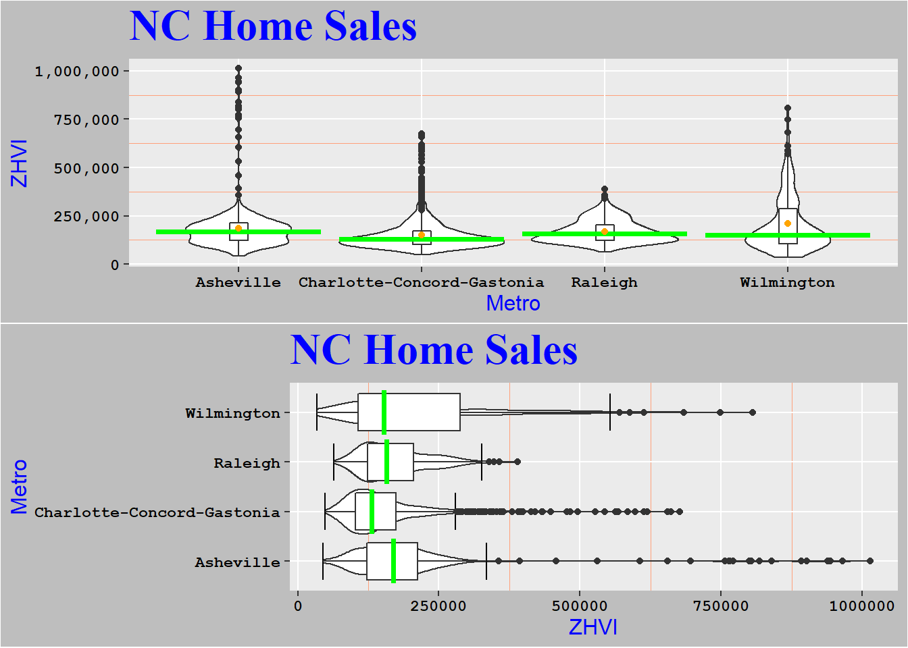

<!DOCTYPE html>
<html xmlns="http://www.w3.org/1999/xhtml" lang="en" xml:lang="en"><head>

<meta charset="utf-8">
<meta name="generator" content="quarto-1.1.251">

<meta name="viewport" content="width=device-width, initial-scale=1.0, user-scalable=yes">
<html>
 <!-- <head>
    <title>Title of the document</title>
  </head> -->
  <!-- <body style="background-color:#1c87c9;">   -->
  <Body Background = "images/RopeBG.jpg"  </Body>    <!--max-width:100%; max-height:100%-->
  <FONT COLOR="#FFFFFF"> </FONT>
   <!-- <h1>Some heading</h1>
    <p>Some paragraph for example.</p> -->
  </body>
</html>

<title>Data Analysis With RMD</title>
<style>
code{white-space: pre-wrap;}
span.smallcaps{font-variant: small-caps;}
div.columns{display: flex; gap: min(4vw, 1.5em);}
div.column{flex: auto; overflow-x: auto;}
div.hanging-indent{margin-left: 1.5em; text-indent: -1.5em;}
ul.task-list{list-style: none;}
ul.task-list li input[type="checkbox"] {
  width: 0.8em;
  margin: 0 0.8em 0.2em -1.6em;
  vertical-align: middle;
}
</style>


<script src="DataAnalysisWithRMD_files/libs/clipboard/clipboard.min.js"></script>
<script src="DataAnalysisWithRMD_files/libs/quarto-html/quarto.js"></script>
<script src="DataAnalysisWithRMD_files/libs/quarto-html/popper.min.js"></script>
<script src="DataAnalysisWithRMD_files/libs/quarto-html/tippy.umd.min.js"></script>
<script src="DataAnalysisWithRMD_files/libs/quarto-html/anchor.min.js"></script>
<link href="DataAnalysisWithRMD_files/libs/quarto-html/tippy.css" rel="stylesheet">
<link href="DataAnalysisWithRMD_files/libs/quarto-html/quarto-syntax-highlighting.css" rel="stylesheet" id="quarto-text-highlighting-styles">
<script src="DataAnalysisWithRMD_files/libs/bootstrap/bootstrap.min.js"></script>
<link href="DataAnalysisWithRMD_files/libs/bootstrap/bootstrap-icons.css" rel="stylesheet">
<link href="DataAnalysisWithRMD_files/libs/bootstrap/bootstrap.min.css" rel="stylesheet" id="quarto-bootstrap" data-mode="light">


</head>

<body class="fullcontent">

<div id="quarto-content" class="page-columns page-rows-contents page-layout-article">

<main class="content" id="quarto-document-content">

<header id="title-block-header" class="quarto-title-block default">
<div class="quarto-title">
<h1 class="title">Data Analysis With RMD</h1>
</div>


<div class="quarto-title-meta">

    
    
  </div>
  

</header>

<p>I begin by doing an analysis on the various regions’ real estate and rental markets. I will look at the ranges the various markets go through over a prescribed period of time. Graphical representations will be created in order to make a more in-depth analysis. I had to drill down into the data further to make better observations when some of the data appeared to be incorrect.</p>
<p>These are some <a href="https://github.com/Ducati013/KevinF.github.io/blob/main/Zillow%20Home%20Value%20Analysis.rmd">examples</a> for a few analyses that were conducted on the <a href="https://www.zillow.com/research/data/">Zillow ZHVI</a> data with R studio.</p>
<div class="cell">

</div>
<section id="wake-county-home-sales" class="level1">
<h1>Wake County Home Sales</h1>
<div class="cell">
<div class="cell-output-display">
<p></p>
</div>
<div class="cell-output-display">
<p></p>
</div>
</div>
<p>a. What have been the overall trends in Wake County Home Values?</p>
<ul>
<li><strong>Overall the trends have been positive.</strong></li>
</ul>
<p>b. There were dips in home values in the past 20 years. What years did these occur?</p>
<ul>
<li><strong>Yes there were two dips in the values the first was 1997 through 1998 and the second was from 2009 through 2012.</strong></li>
</ul>
<p>c. Based on the analysis, where would be the least expensive area to purchase home? Most expensive area?</p>
<ul>
<li><p><strong>Zebulon</strong> was the <strong>least expensive</strong> area.</p></li>
<li><p><strong>New Hill</strong> was the <strong>most expensive</strong> in 2018.</p></li>
</ul>
<p>d. Are any area home values trending down? Is there one area that stands out compared to others?</p>
<ul>
<li><p><strong>I do not see any regions that are declining in value within Wake County.</strong></p></li>
<li><p>If I investigate further I do a small decrease in <strong>New Hill</strong> in October 2018.</p></li>
<li><p>New Hill stands out compared to the regions and it appears to be an anomaly based on historical data.</p></li>
<li><p>New Hill will need further investigation with more recent data.</p></li>
<li><p>Upon Further investigation New Hill is indeed accurate with the current data provided.</p></li>
</ul>
</section>
<section id="nc-rental-market" class="level1">
<h1>NC Rental Market</h1>
<div class="cell">
<div class="cell-output-display">
<p></p>
</div>
</div>
<p>a. What has been the overall trend in the rental market around the state? Are there any cities that have not followed this trend?</p>
<ul>
<li><p><strong>The overall trend has been an increase in the rental costs in the evaluated cities.</strong></p></li>
<li><p><strong>Fayetteville</strong> did not follow the trend, the retal rate dropped in 2011 and again in 2016 before returning to a more normal level in 2017.</p></li>
</ul>
<p>b. Where is the most expensive city to rent in? Least expensive?</p>
<ul>
<li>Currently the <strong>most expensive</strong> city to rent in is <strong>Asheville</strong> while the <strong>least expensive</strong> is <strong>Fayetteville.</strong></li>
</ul>
<p>c. You are trying decide between Wilmington and Asheville. Which market has the lowest rent?</p>
<ul>
<li><strong>Wilmington</strong> has lower rent than Asheville in 2017.</li>
</ul>
<div class="cell">
<div class="cell-output-display">
<p></p>
</div>
</div>
<p>a. According to the results, which market has the lowest median price (represented as horizontal bar in</p>
<p>box plot)?</p>
<ul>
<li><strong>Charlotte-Concord-Gastonia</strong> had the lowest median price.</li>
</ul>
<p>b. The violin plot will show density meaning the wider the plot is, the more observations occur within</p>
<p>that area. Which market has the most density around the median value of homes?</p>
<ul>
<li><strong>Charlotte-Concord-Gastonia</strong> once again has the largest density around the median value in that metro area.</li>
</ul>
</section>
<section id="relocation-home-value-comparison" class="level1">
<h1>Relocation Home Value Comparison</h1>
<div class="cell">
<div class="cell-output cell-output-stdout">
</div>
<div class="cell-output-display">
<p></p>
</div>
</div>
<ol type="a">
<li>Based on your analysis, which city’s housing is most affordable? Least affordable?</li>
</ol>
<ul>
<li><strong>Houston-The Woodlands-Sugar Land</strong> appears to be the most affordable, and <strong>New York-Neward-Jersey City</strong> are the least affordable.</li>
</ul>
<ol start="2" type="a">
<li>Which cities saw the largest change in prices over the past 5 years? Which city has remained more</li>
</ol>
<p>consistent (i.e., no huge swings up or down in home values)?</p>
<ul>
<li><p>During the past 5 years <strong>New York-Neward-Jersey City</strong>, and <strong>Denver-Aurora-Lakewood</strong> saw the largest change in prices.</p></li>
<li><p><strong>Houston-The Woodlands-Sugar Land</strong> has the most consistent housing market since 1996, and <strong>Chicago</strong> has had the most consistent housing market during over the past 5 years.</p></li>
</ul>
<ol start="3" type="a">
<li>During the market downturn in 2012, which cities were most impacted? Which cities have</li>
</ol>
<p>recovered?</p>
<ul>
<li><p><strong>New York-Newark-Jersey City</strong> and <strong>Chicago-Naperville-Elgin</strong> were the most effected by the 2012 downturn.</p></li>
<li><p>All the cities have recovered since the 2012 market downturn.</p></li>
</ul>
</section>

</main>
<!-- /main column -->
<script id="quarto-html-after-body" type="application/javascript">
window.document.addEventListener("DOMContentLoaded", function (event) {
  const toggleBodyColorMode = (bsSheetEl) => {
    const mode = bsSheetEl.getAttribute("data-mode");
    const bodyEl = window.document.querySelector("body");
    if (mode === "dark") {
      bodyEl.classList.add("quarto-dark");
      bodyEl.classList.remove("quarto-light");
    } else {
      bodyEl.classList.add("quarto-light");
      bodyEl.classList.remove("quarto-dark");
    }
  }
  const toggleBodyColorPrimary = () => {
    const bsSheetEl = window.document.querySelector("link#quarto-bootstrap");
    if (bsSheetEl) {
      toggleBodyColorMode(bsSheetEl);
    }
  }
  toggleBodyColorPrimary();  
  const icon = "";
  const anchorJS = new window.AnchorJS();
  anchorJS.options = {
    placement: 'right',
    icon: icon
  };
  anchorJS.add('.anchored');
  const clipboard = new window.ClipboardJS('.code-copy-button', {
    target: function(trigger) {
      return trigger.previousElementSibling;
    }
  });
  clipboard.on('success', function(e) {
    // button target
    const button = e.trigger;
    // don't keep focus
    button.blur();
    // flash "checked"
    button.classList.add('code-copy-button-checked');
    var currentTitle = button.getAttribute("title");
    button.setAttribute("title", "Copied!");
    setTimeout(function() {
      button.setAttribute("title", currentTitle);
      button.classList.remove('code-copy-button-checked');
    }, 1000);
    // clear code selection
    e.clearSelection();
  });
  function tippyHover(el, contentFn) {
    const config = {
      allowHTML: true,
      content: contentFn,
      maxWidth: 500,
      delay: 100,
      arrow: false,
      appendTo: function(el) {
          return el.parentElement;
      },
      interactive: true,
      interactiveBorder: 10,
      theme: 'quarto',
      placement: 'bottom-start'
    };
    window.tippy(el, config); 
  }
  const noterefs = window.document.querySelectorAll('a[role="doc-noteref"]');
  for (var i=0; i<noterefs.length; i++) {
    const ref = noterefs[i];
    tippyHover(ref, function() {
      // use id or data attribute instead here
      let href = ref.getAttribute('data-footnote-href') || ref.getAttribute('href');
      try { href = new URL(href).hash; } catch {}
      const id = href.replace(/^#\/?/, "");
      const note = window.document.getElementById(id);
      return note.innerHTML;
    });
  }
  var bibliorefs = window.document.querySelectorAll('a[role="doc-biblioref"]');
  for (var i=0; i<bibliorefs.length; i++) {
    const ref = bibliorefs[i];
    const cites = ref.parentNode.getAttribute('data-cites').split(' ');
    tippyHover(ref, function() {
      var popup = window.document.createElement('div');
      cites.forEach(function(cite) {
        var citeDiv = window.document.createElement('div');
        citeDiv.classList.add('hanging-indent');
        citeDiv.classList.add('csl-entry');
        var biblioDiv = window.document.getElementById('ref-' + cite);
        if (biblioDiv) {
          citeDiv.innerHTML = biblioDiv.innerHTML;
        }
        popup.appendChild(citeDiv);
      });
      return popup.innerHTML;
    });
  }
});
</script>
</div> <!-- /content -->


</body></html>
